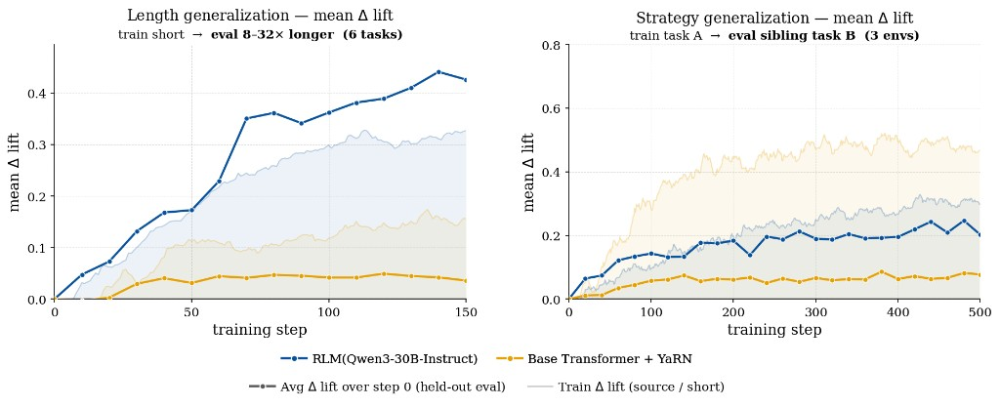
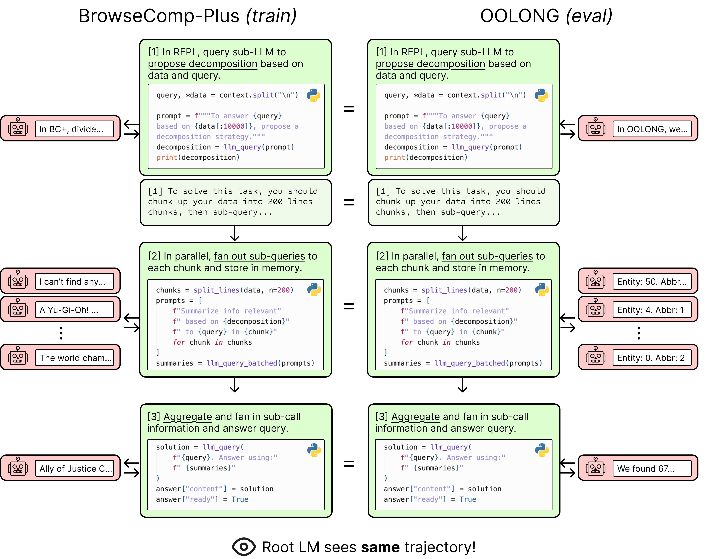
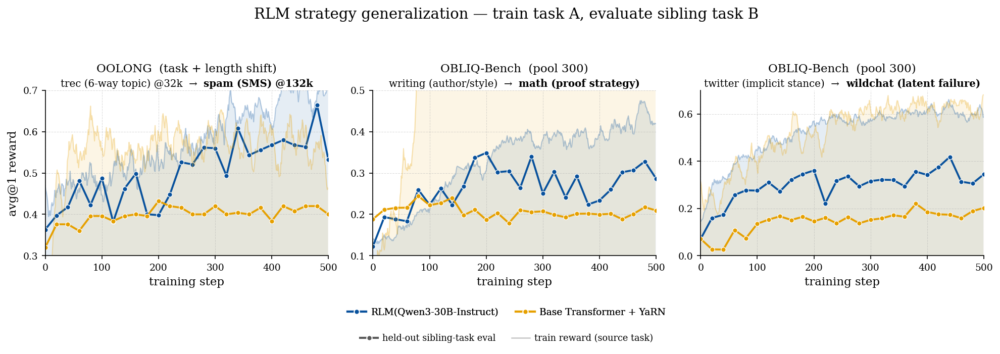

现代后训练已成为一种蛮力范式：不断策划更多环境和更长的训练视野。这在很大程度上是因为前沿Transformer仍然不擅长组合泛化，即通过组合熟悉的问题来解决未见过的问题的能力。除非模型能够组合它们学到的单个经验，否则缩放的回报将比应有的更慢，因为每个新领域都需要以训练数据的形式进行投资。
当然，训练数据并不是唯一的杠杆。过去几年，我们通过为Transformer搭建脚手架来攻克更难的任务，首先是思维链推理，然后是工具使用等等。然而，在这一切中，泛化本身一直留给底层神经网络及其2017年的令牌级归纳偏置。我们认为，更好的泛化很大程度上是今天所谓的Harness的工作。
Harness是位于外部世界和神经网络之间的程序：它决定如何将环境的当前状态（可以任意长且复杂）编码为LLM的一个或多个输入，以及如何确定下一个动作。Harness的主要工作应该是承载更高层次的归纳偏置，将不熟悉的复杂问题简化为底层神经网络的简单问题组合。

具体来说，我们认为一个好的Harness会塑造对底层Transformer的每次调用，使每个观察都是局部分布内的，即每个Transformer调用处理相对于其训练数据处于分布内的提示。事实上，一个好的Harness经常可以将似乎需要后训练突破的问题简化为现有一代语言模型几乎平凡的能力。
我们在近一年前首次针对长上下文处理展示了这一原则的一个版本，在本文中，我们展示这一原则延伸到学习本身的效率。也就是说，通过精心设计的Harness学习到的东西，在任务长度和跨领域上的泛化能力远远优于单独训练神经网络。
我们通过使用强化学习（RL）训练递归语言模型（RLM）来测试这一点，RLM是一种Harness，其中模型卸载其上下文并将执行推迟到程序化分解和递归子调用。仅在短任务上训练就能泛化到8-32倍长的保留任务，在相同训练提升下，评估提升约是直接训练底层Transformer的10倍。此外，在一个领域上训练以远优于普通Transformer的速率转移到其他领域。

我们观察到这种泛化效应是因为RLM Harness在具有潜在相似性的任务之间诱导等价关系，这意味着RLM的主要上下文在这些任务之间看到几乎相同的令牌级轨迹。这些结果表明，与调整模型架构和训练配方类似，精心设计的Harness可以降低策划更多数据和生成更长滚动的成本，同时增加通过后训练可解决任务的覆盖范围。
幸运的是，我们可以以促进改进缩放的方式来表述这一点。一个好的Harness是将不熟悉的问题简化为熟悉的问题，将复杂问题简化为简单问题的Harness。换句话说，即使状态对于任何单个语言模型调用训练的内容来说是分布外（OOD）的，好的Harness也会产生局部分布内（LID）的观察，我们将其定义为对该观察的每个单独LM调用相对于训练数据处于分布内。
遗憾的是，现有的Harness设计（如Claude Code和Codex）未能促进底层神经网络的局部分布内（LID）观察。特别是，它们从根本上依赖于用交错的任务特定信息、工具调用输出和推理来填充Transformer的上下文窗口，这些信息不断被追加。是的，这为模型提供了大量上下文，但这些臃肿的历史很快就会脱离训练分布，表现为我们在实践中经常观察到的'上下文腐烂'现象。

相反，我们提出一个好的Harness应该使单独的LM调用将结构相似的任务视为同构，从而实现组合泛化。形式上，Harness在所有任务状态的集合上诱导等价算子，这意味着结构相似的任务属于同一Harness诱导的等价类，并为所涉及的神经网络产生相似的观察集合。
好的Harness在任务上诱导等价类，从而实现更好和更可组合的学习。精心设计的Harness不仅将可学习轨迹的空间减少到一个小的等价类集合，而且还泛化到比可用训练任务集合更广泛的轨迹类别，包括那些不适合基础模型上下文窗口的轨迹。
递归语言模型（RLM）Harness的设计围绕着通过分解来抽象任务，并将输入特定信息推迟到子调用。从这个意义上说，RLM将类似分解的问题视为同构的，它通过以下方式实现这一点：

输入特定上下文作为符号变量传递，因此根语言模型调用不会直接看到它。这使不同问题在第一步看起来相似。最近，几个脚手架已将此功能作为上下文管理的一种形式采用（参见Anthropic的Managed Agents博客）。
就其本身而言，上下文卸载并不能防止环境反馈和/或子代理信息返回到主上下文。在长轨迹视野中，主上下文变为OOD，破坏LID。
子代理和普通工具被视为代码REPL中的函数，允许根LM选择性地选择信息并在进一步的工具调用和子代理之间传递信息，而根LM本身永远不需要看到它。
这包括工具和子调用输出，它们可以直接存储在内存中的变量中并由未来的子调用访问。对于从主上下文中抽象任务特定信息，程序化子调用与上下文卸载同样重要。
众所周知，在特定上下文长度的领域上训练基于Transformer的LM不一定能泛化到更长的上下文长度。生产模型（如Qwen 3.x、Kimi K2.x、GLM 5.x等）中的大量中期训练和后训练工作一直致力于仔细地将越来越长的数据引入训练组合，以便LM可以学习处理这些上下文长度，然后许多现代应用通常会超过这些长度。
长度泛化问题尤其影响标准代理设计，如ReAct、CodeAct、Claude Code、Codex等，正如我们提到的，它们依赖于将观察追加到不断增长的上下文前缀历史中。
我们假设对于RLM，不同长度的类似任务可以属于同一等价类。在以下实验中，我们探索仅在短序列上专门训练RLM的根LM如何能够泛化到数量级更长的序列，因为我们假设RLM根LM在两种设置下看到的分解以及因此轨迹几乎相同。
我们考虑跨不同长度轴的6个不同环境套件：改变输入长度、输出长度和指令数量。我们明确仅在包含短任务的拆分上训练，并在同一领域内仅包含显著更长任务的拆分上评估。
MRCRv2（64k，2针设置到2M，8针设置）：前沿模型报告中常见的基准，前提是在大量对话数据语料库中找到回答某些查询的针句子的第n个实例。
GraphWalks（<128K到>1M设置）：前沿模型报告中另一个常见基准，前提是从图中提取满足某些简单约束的节点。
LongBenchPro（32k到256k设置，仅英语）：一系列多项选择题风格的问题，涵盖11种不同的QA、代码和推理风格问题。
OOLONG [trec-coarse]（32k到256k设置）：一组聚合风格的问题，用于回答关于信息数据集的统计信息。
OOLONG-Pairs（8k到32k输入，7k到146k输出设置）：OOLONG的修改变体，用于查找OOLONG数据集中满足某些约束的元素对。
Ada-LEval [best-answer]（8k到128k设置）：给定一个问题和大量潜在候选和干扰答案，挑选出最适合回答问题的答案。

在所有六个任务中，通过专门在短任务上训练，RLM在长任务上产生了显著更好的评估结果，即使从较低的第0步评估性能开始，也以显著优势击败了基础Transformer。在MRCRv2、GraphWalks、OOLONG和OOLONG-Pairs上，训练的Qwen3-30B-A3B-Instruct-2507 RLM接近或超过具有前沿模型GPT-5.5的RLM在长评估上的表现，同时远远超过基础Transformer。
较长任务上的RLM评估性能更接近较短任务上的训练奖励。在所有六个任务中，RLM相对于其起始的第0步评估性能，在长评估上产生显著的性能改进。基础Transformer通常产生平坦的评估性能，尽管训练奖励增长并且经常超过RLM的训练奖励，这表明Transformer学到的东西不能外推到更长的设置。

前一节表明，RLM可以通过将它们抽象为根模型中的相同任务来学习将任务及其长度外推变体视为同构。特别是对于长度外推，如果RLM学习了与长度无关的策略，它会迅速泛化到更长的长度。我们可以将这种直觉带到具有共享分解的任务的泛化上：如果RLM学习了从一个领域泛化到另一个领域的策略（例如应用排序、过滤和搜索、MapReduce等），它可以通过抽象掉领域特定令牌并将两个问题视为等价来类似地泛化。
我们考虑3个领域，其中上下文和查询指的是完全不同的领域，但实际的底层策略大致相同：
OOLONG（trec-coarse问题→垃圾邮件问题）：在关于Jeopardy TREC问题的聚合任务上训练，在关于答案是SPAM或HAM的问题的聚合任务上评估。
OBLIQ-Bench Analogues（写作→数学）：在搜索似乎由同一作者撰写的文章的任务上训练，在搜索需要相同推理过程的数学问题的任务上评估。训练和评估指标是nDCG@10。
OBLIQ-Bench Descriptive（Twitter立场→Wildchat错误）：在查找满足特定立场的推文的任务上训练，在搜索包含错误的Wildchat对话的任务上评估。训练和评估指标是nDCG@10。

我们类似地发现，RLM在与训练域完全不同的域上表现出清晰的泛化能力，而基础Transformer难以有意义地改进。与长度泛化实验类似，基础Transformer训练期间OBLIQ-Bench上评估性能的初始改进通常来自学习遵循正确的答案格式，这很快就会减弱。
有趣的是，尽管评估性能存在明显差距，但基础Transformer的训练奖励通常超过RLM的训练奖励。相反，RLM的训练奖励与评估奖励的趋势密切匹配，尽管在完全不同的领域。
在类似大小的任务上，RLM比天真地训练Transformer会产生额外的运行时和内存成本。特别是，在长度和策略泛化实验中，由于每个样本的多个步骤和等待子调用，RLM训练的运行时比基础Transformer对应物长1.5-3倍。
然而，这种成本随任务复杂性很好地扩展，因为在更长的上下文/视野任务上训练Transformer要昂贵得多。即使在上述任务上为30B模型训练简单的ReAct代理，由于上下文膨胀，对于8xH100来说也很困难。
从这些强大的早期结果中，很容易认为我们都应该修补Harness设计，或者将我们针对特定问题的直觉强加于过度结构化的程序化策略，如MapReduce或动态规划。但毫无疑问，这样做我们将不可避免地违反痛苦的教训，并在几个月内被淘汰。
参考：https://alexzhang13.github.io/blog/2026/harness/